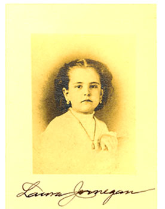

This is an archived copy of History Matters, provided by the Roy Rosenzweig Center for History and New Media. To explore this content in a new interface, visit Who Built America?.

Laura Jernagen: Girl on a Whaleship
http://www.girlonawhaleship.org/
Created and maintained by the Martha’s Vineyard Museum.
Reviewed Nov. 15-Dec. 6, 2012.
This superb Web site is built around the journal of Laura Jernegan, who set sail from New England in 1868 at the age of six with her father, Jared, her mother, Helen, and her brother, Prescott, on a three-year voyage on the whaler Roman. Upon his return to Martha’s Vineyard from an earlier voyage, Jared Jernegan had been devastated to learn that his first wife and two children had died during his absence. Now that he had a second family, he was determined to keep them with him. The captain’s quarters on the Roman became Laura’s home and her schoolroom, and the ship’s deck was her and her brother’s (carefully supervised) play area.

As her childish handwriting gave way to more polished script, Laura recounted rounding Cape Horn, two lengthy sojourns with her mother and brother in Honolulu while her father took the Roman to the Arctic Ocean whaling grounds, and a rendezvous in the middle of the Pacific Ocean with her uncle’s whaling ship. Although she omitted any mention of the mutiny that erupted when Jared refused his men shore leave, possibly because the event was too traumatic, the site’s designers fill that silence with other firsthand accounts from the perspectives of Captain Jernegan and of the mutineers.
The hazards of shipboard life ultimately convinced Jared to send his family home. He eventually returned without his ship. The Roman was one of the American whaling fleet caught in the Arctic ice in 1871. Jared and his men made their way to the rescue ships in what is truly an epic tale of survival. Site users would probably love to have Laura’s journal entries about the harrowing escape from the ice floes, but by then she was safely back in Edgartown, Massachusetts.
The site’s creators supplement Laura’s journal with a wealth of primary materialsfrom newspaper reports to census entries, from crew lists to family letters (scanned and transcribed). We also learn what happened to the Jernegans once they were back on dry land. Prescott, for example, became a Baptist minister and an accomplished swindler.
A few more details about the crew of the Roman would have been useful, although following an ever-changing cast of characters presents immense challenges and was probably not feasible. Even when nothing as dramatic as a mutiny occurred, desertions from whaling ships were common, and captains recruited additional men wherever they could find them. Even if the images in the “Meet the Crew” section are somewhat genericand decidedly whitethe site does emphasize the multiracial composition of whaling crews.
All in all, the team at the Martha’s Vineyard Museum has done an outstanding job of exploring the world of Laura Jernegan and the larger world of nineteenth-century whaling. Navigating this site was a pleasure. Links work. Musical clips play on cue. Images are clear, and zoom features operate well. I have struggled with too many sites that frustrated rather than enlightened me. This was not one of them. The concept, design, and technical implementation of Laura Jernagen: Girl on a Whaleship make it a first-rate learning and teaching resource. It is highly recommended!
Julie Winch
University of Massachusetts, Boston
Boston, Massachusetts